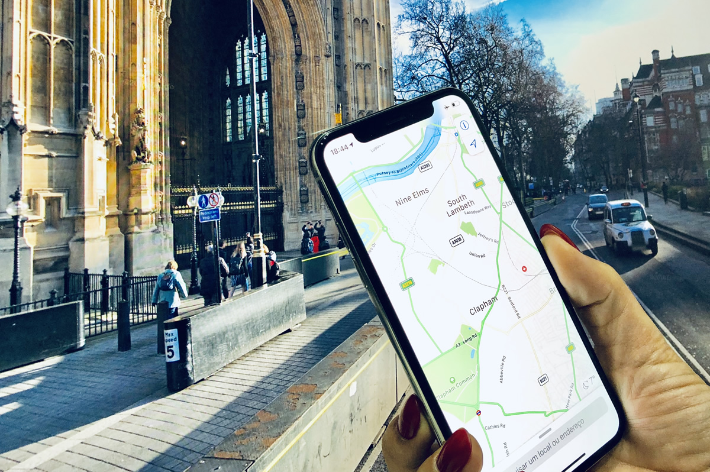

Saindo de Fortaleza há 2 possibilidades para se chegar a Quixadá,
a mais utilizada é a BR-116 onde no Km 70 em um local conhecido com Triangulo
de Chorozinho você deixa
a BR, e segue em direção a Quixadá pela CE-359. Chegando em Quixadá, seguir em direção a
Quixeramobim, e após a polícia rodoviária, uns 8km, entra-se a esquerda no trevo,
no sentido de Banabuiú. Após 2 km, entra-se a esquerda novamente no Distrito de Juatama,
ai e é so seguir a estrada de calçamento até o Hotel Pedra dos Ventos que fica na
serra do Juá em Juatama.
Pode-se utilizar também a CE-060, até Quixadá, e seguir a partir de Quixadá o mesmo roteiro
anteriormente descrito.
Em caso de dúvidas, estamos 24 horas de plantão para orientações necessárias, bastando para
isso ligar para +55 88 3451.2028 ou +55 88 96040425

Hotel Luar do Sertão - Quixadá, Ceará, Brasil - Tel. +55 88 3451.2028 - 88 99604.0425 - Todos os direitos reservados à Wemerson Monteiro Damasceno